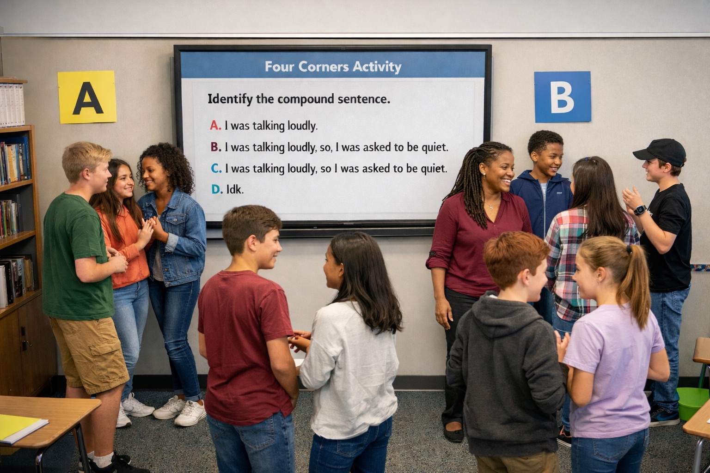

Reflections
Food for thought.
None of us are strangers to adversity. We have all survived something we rarely speak about. I write for those who refuse to let challenges define them.
Inner dialogue on education, leadership, healing, identity, behaviour, change and the things we don't always say aloud.
Featured Reflection
Latest Reflections
What I'm thinking about now.
Recent reflections, updated automatically from my current writing.
Loading recent reflections...
From the Archive
Worth returning to.
Earlier writing on the questions that continue to shape how we live, lead, teach and make sense of change.
Loading the archive...
“Sometimes reflection doesn't give us an answer. It gives us a better question.” — Marsha Kerr Talley
Stay With the Conversation
New reflections, when they're ready.
Subscribe if you'd like future writing delivered directly to your inbox, or explore the complete archive on Substack.